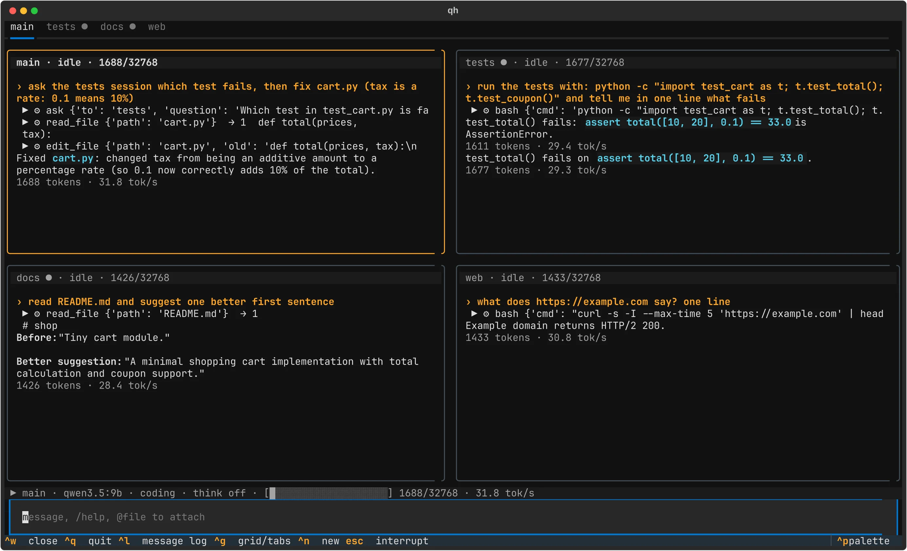

One line to start
/team create shares the folder, private, secrets left out, and invites friends by GitHub name. They run qh join you/project.
01 Team
Over qh-link, an encrypted direct line between your machines. The GitHub repo is only where you find each other.
Friends on one project, each on their own computer. Nothing lands on your machine without your yes.
/team create shares the folder, private, secrets left out, and invites friends by GitHub name. They run qh join you/project.
Who's online, what their agents are doing, and their sessions to read along.
A teammate's work lands in Requests. It runs only when you accept, and you approve every edit it leads to.
Same network, across the internet, or through a relay when nothing else gets through. Viewer, member or trusted, enforced by your own qh.
02 Proof
Tokens sent to the model before you say hello. Same scale, both bars: 12 times less overhead.
One Rust binary, 5 MB of memory when idle. The GPU and RAM go to the model.
18 tasks, 3 runs each. A change stays only if this number goes up.
About 1,200 tokens before you say hello, against about 14,000.
Measured 2026-10-09 and 10 on a laptop with an 8 GB NVIDIA GPU, qwen3.5:9b on Ollama. Your numbers will vary. This is weight, not capability.
03 Sessions

Give each line a job and let them talk: one asks and waits, one hands off and moves on, one starts a worker that reports back.
Whoever hands work over hears when it's done, and reports never trigger replies, so nothing ping-pongs.
Local models take turns on your GPU. Cloud ones run at the same time.
A file one session is editing is locked for the others until it's done.
04 Safety
Every command runs in your system's own sandbox,
so auto mode is safe to leave on.
The operator's rules. Anything that crosses a line still asks you.
They write only in the project, can't read secrets, and reach the network through an allowlist. On Linux, macOS and Windows.
Even in auto: rm, sudo, git push, curl | sh.
~/.ssh, .env and keys are never read without your yes.
/undo reverts the last change. /diff shows the whole session.
0.2.8 is out. A stalled network no longer holds up requests, and a teammate's session stays current while you watch it.What's new
05 Install
$ curl -fsSL kesavsabari.github.io/qh/sh | shWorks with your ChatGPT plan, Ollama local or cloud, coding plans, or any API key.